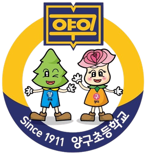

수업 아카이브
수업을 누르면 소수 학생 목표와 지원 설계를 볼 수 있습니다. 점 세 개는 표상·표현·참여 원리의 적용 여부입니다.
자체 제작 수업 도구
교사가 직접 개발해 수업에서 사용한 웹 도구입니다.

양구초등학교 통합교육 연구학교 · L.I.N.K. 프로그램
AI·에듀테크를 지렛대로 학습 장벽을 제거하는 보편적 학습설계(UDL) 수업의 교수·학습과정안과 수업 도구를 기록합니다.
31참여 교사 0공개 과정안 0교과
수업을 누르면 소수 학생 목표와 지원 설계를 볼 수 있습니다. 점 세 개는 표상·표현·참여 원리의 적용 여부입니다.
교사가 직접 개발해 수업에서 사용한 웹 도구입니다.